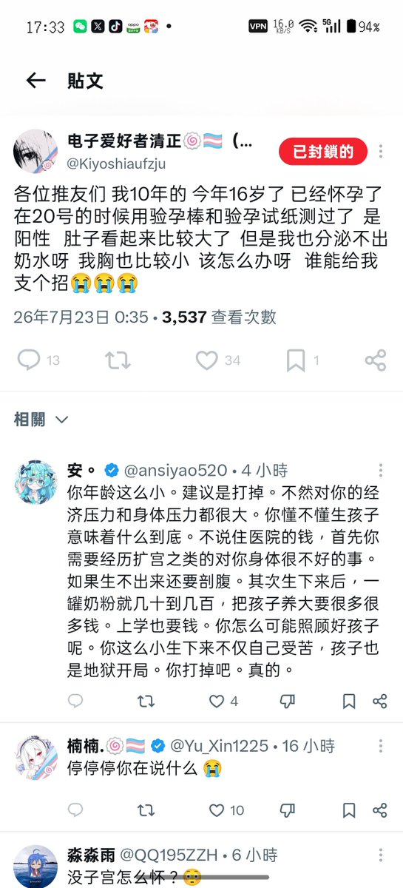
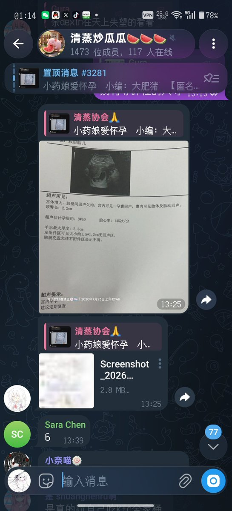

櫻川由奈🏳️⚧️Sakura🍥
@Xiaoyi_0324
這麼明顯的炒作還真有人信了 那不一眼假嗎 就沖他之前的所有圖片 是個人都能看出來這是男生吧 我真的沒想到會有這麼多人信
以及所謂的第二張圖和以前所有的圖 現在ChatGPT圖像生成技術這麼厲害 水印也沒有拍照信息 只打了個時間是怎麼有人信的 這種東西誰不信我可以發給你看看我p的 不能說毫不相幹吧 隻能說一模一樣了
我希望大家能有一些分辨謠言的能力和思維 不要隨便被輿論帶偏 這種驢唇不對馬嘴的炒作還真讓一些人相信他是女生了 哦 還有 16歲當警察 你國也是沒救了哈 成天就會用那個破警務通威脅人 也就會這個了

